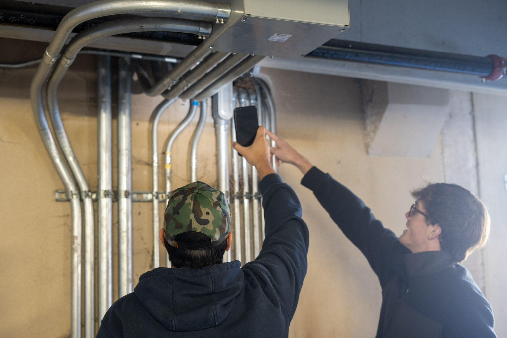
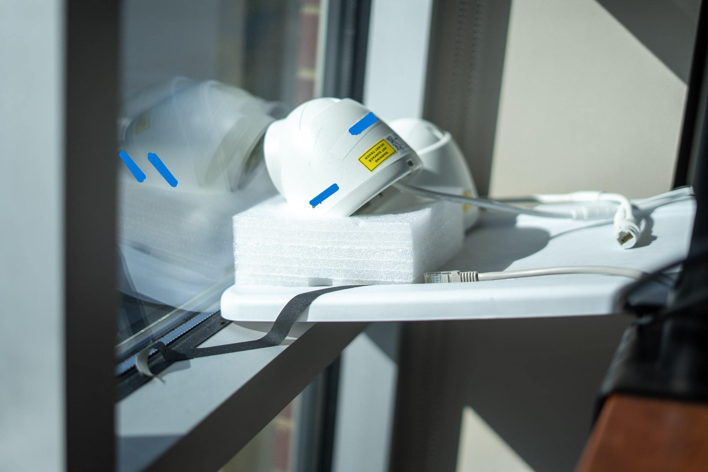
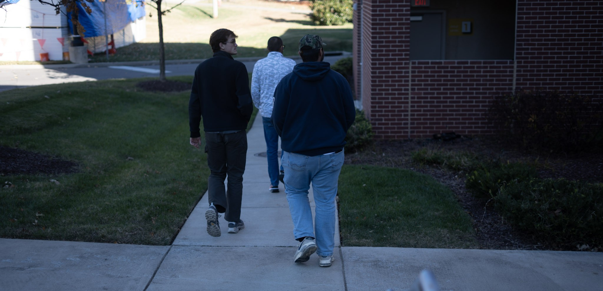

About Parkageddon
Parkageddon was developed by the Wireless Communications course at Lipscomb University to help students, faculty, and visitors locate available parking quickly and safely. The project combines campus telemetry, a lightweight web dashboard, and careful attention to usability and privacy.
What problem does it solve?
On busy days the campus parking supply can be uncertain. Parkageddon gives a centralized, easy-to-use view of garage availability so drivers can choose a destination with confidence, reduce circling for parking, and lower traffic and emissions within the campus.
Key features
- Real-time garage availability displayed per structure.
- Mobile-friendly dashboard for quick access on phones.
- Simple navigation to each garage's detail page and a feedback form for reporting problems.
- Designed with accessibility and progressive enhancement in mind.

High-level architecture
Below is a simplified, non-sensitive overview of how the dashboard is structured. This is intentionally high-level — implementation details and operational configuration are kept private to preserve security.
Notes: the stack uses stable open-source components (for example, Nginx, Python/Flask, and PostgreSQL). The application is designed as a thin web layer that serves the dashboard and queries the database for current garage state. Telemetry and sensor ingests are processed before being stored; ingestion and operational logs are monitored and maintained separately by the administration team.

Data & privacy
Parkageddon is focused on aggregate garage availability. We intentionally avoid collecting personally identifying information on the public dashboard. Key points:
- Displayed information is aggregate (spots available per garage), not individual vehicle tracking.
- Sensors and telemetry that feed the system are handled by campus operations and are ingested by secured services; personally identifying telemetry is not published.
- Feedback submissions are retained only as needed to respond and may be reviewed by the course/institutional support staff.
Security practices (high level)
To reduce operational risk the deployment follows common security best practices such as:
- Transport-layer security (HTTPS/TLS) for all public traffic.
- Access control and least-privilege for database and administrative access.
- Input validation and output encoding in the application to limit injection risks.
- Regular software updates and monitored logs to detect anomalous behavior.
Operational configuration (keys, credentials, firewall rules, and monitoring details) is intentionally not exposed here.

Get involved
If you're a student interested in contributing, or a faculty/staff member with a use case, please reach out via the feedback form and include your contact info and a brief description of how you'd like to help. Student contributors may be invited to collaborate on subsequent improvements.
Future work
- Improve mobile-first styles and progressive web app (PWA) supports.
- Expanded coverage to lots and permit zones where appropriate and permitted by campus policy.